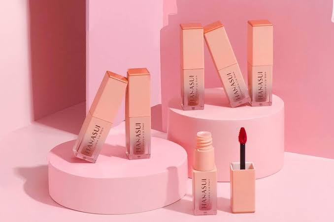
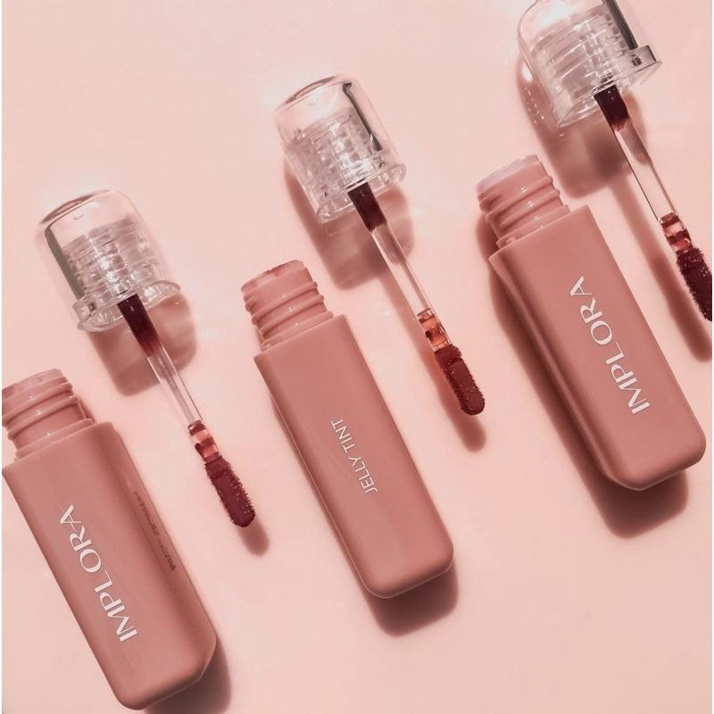
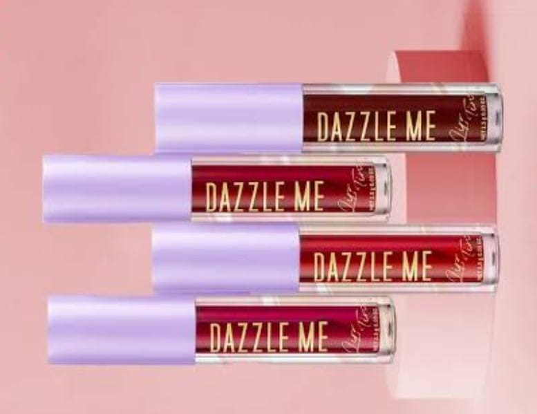
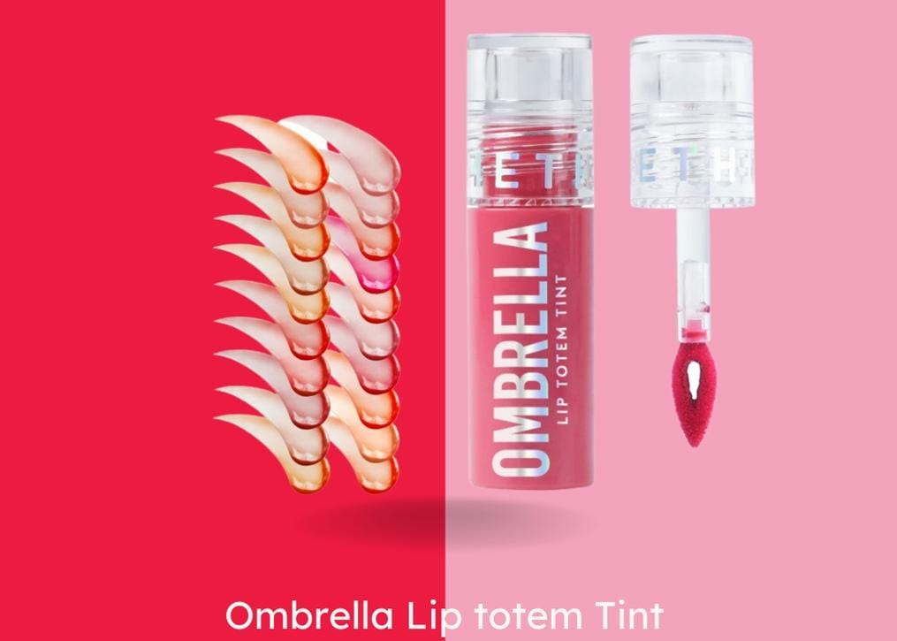
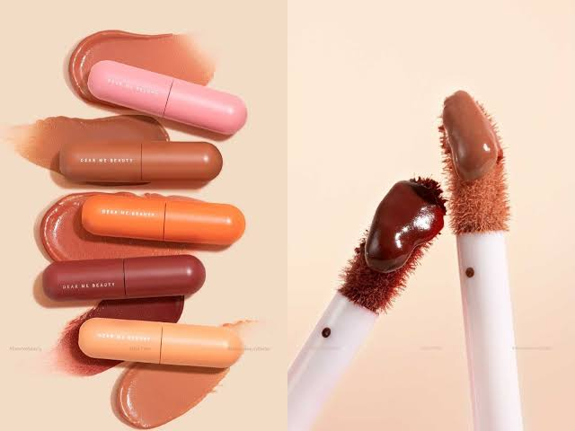
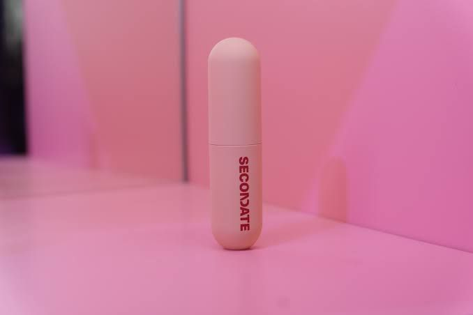
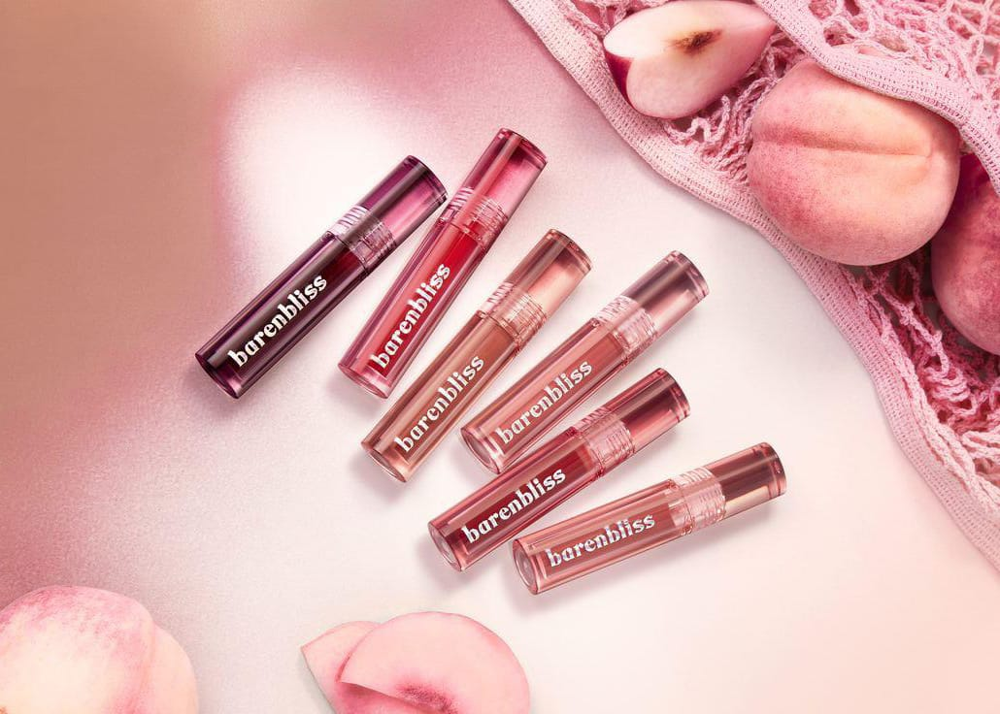
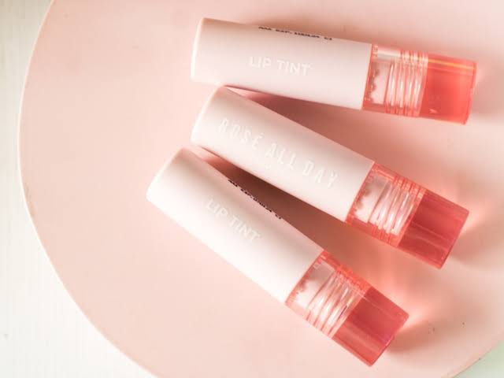

Halo Sobat Beauty!
Ada beberapa hal yang perlu dipertimbangkan sebelum memutuskan untuk membeli pewarna bibir, salah satunya adalah dari segi kandungan lipstik atau lip tint yang anda gunakan. Dikarenakan, beberapa merk lip tint mungkin menambahkan bahan kimia berbahaya, seperti triklosan yang berfungsi untuk membuat lip tint menjadi tahan lama.
Penelitian dalam jurnal Science of The Total Environment mengungkapkan bahwa senyawa triklosan dapat meningkatkan kadar hormon tiroid dalam tubuh. Oleh karena itu, sebaiknya perhatikan informasi komposisi kandungan di label kemasannya untuk menghindari bahwa kimia berbahaya didalamnya. Selain itu, pilihlah jenis pewarna bibir yang water-resistant atau tahan air. Dengan begitu, produk pewarna bibir yang Anda gunakan dapat tahan lama tanpa perlu diaplikasikan ulang kembali.
Jadi Lip tint merupakan salah satu alat make-up yang sering digunakan oleh banyak wanita. Memakai lip tint dapat membuat tampilan bibir dan riasan secara keseluruhan terlihat lebih menarik. Berikut ini beberapa rekomendasi lip tint terbaik yang bisa Anda coba.
1. Hanasui Tintdorable Lip Stain-lip Tint
Hanasui Tintdorable Lip Stain adalah pewarna bibir dengan tekstur yang ringan dan memiliki berbagai macam pilihan warna yang cerah dan tampak natural. Pewarna bibi ini juga mengandung vitamin E yang berfungsi sebagai antioksidan untuk meningkatkan hidrasi dan kelembapan bibir. Tidak hanya itu, pewarna bibir ini juga memiliki formula water resistant, sehingga warnanya dapat melekat di bibir hingga seharian tanpa perlu aplikasi ulang kembali.
Anda bisa mendapatkan produk diatas dengan mengklik link dibawah ini. link Shopee2. Implora Jelly Tint
Implora Jelly Tint merupakan produk pewarna bibir yang memiliki kandungan vitamin E untuk membantu melembabkan dan merawat kesehatan bibir. Selain itu, produk pewarna bibir ini juga lama dan tidak meninggalkan bekas, sehingga cocok digunakan untuk kegiatan sehari-hari. Memiliki berbagai macam pilihan warna yang beragam, pewarna bibir ini memiliki efek glossy yang dapat membuat penampilan Anda terlihat lebih menarik.
Anda bisa mendapatkan produk diatas dengan mengklik link dibawah ini. link Shopee3. Dazzle Me Ink-Licous
Rekomendasi lip tint tahan lama selanjutnya adalah produk dari Dazzle Me. Produk ini telah dilengkapi dengan waterproof dan transferproof, sehingga tetap tahan lama seharian. Selain itu, produk lipstik ini diformulasikan dengan air, sehingga bahannya ringan dan nyaman untuk digunakan. Produk ini juga memiliki kandungan ekstrak hyaluronic acid dan castor oil alias minyak jarak yang dapat membantu untuk merawat bibir sekaligus mengatasi bibir kering.
Anda bisa mendapatkan produk diatas dengan mengklik link dibawah ini. link Shopee4. Somethinc Ombrella Lip Totem Tint
Pewarna bibir satu ini terasa lembap di kulit dan warnanya tidak mudah pudar. Oleh karena itu, Anda dapat menggunakan lipstik ini seharian tanpa menyebabkan bibir pecah-pecah. Produk ini memiliki aroma yang manis dan tekstur yang cenderung creamy serta dapat melapisi keseluruhan bibir dengan baik hanya dalam sekali pakai. Produk ini juga memiliki tampilan warna yang cerah dan natural, sehingga cocok untuk digunakan dalam memberikan efek gradasi atau ombre pada bibir Anda.
Anda bisa mendapatkan produk diatas dengan mengklik link dibawah ini. Link Shopee5. Dear Me Beauty Velvet Lip Tint
Pewarna bibir dari Dear Me Beauty ini merupakan produk terbaru yang memiliki bahan yang ringan dan tidak menggumpal, sehingga nyaman digunakan. Selain itu, produk ini juga memiliki fungsi 3-in-1 yang dapat digunakan untuk memerahkan bibir, pipi, atau mata. Dilengkapi dengan kandungan jojoba oil yang dapat membantu untuk melembapkan kulit. Tidak hanya itu, produk ini juga telah dilengkapi dengan UV filter, sehingga dapat melindungi bibir dari paparan sinar UV.
Anda bisa mendapatkan produk diatas dengan mengklik link dibawah ini. Link Shopee6. SECONDATE's Milky Gel Lip Tint
Secondate Milky Gel Lip Tint ini memiliki kandungan hyaluronic acid yang dapat membantu melembabkan bibir dan mencegah bibir pecah-pecah. Selain itu, produk ini memiliki formula waterproof dan tahan lama untuk digunakan seharian saat beraktivitas. Pewarna bibir dengan tekstur yang ringan ini juga cocok digunakan untuk Anda yang ingin membuat tampilan warna bibir ombre.
Anda bisa mendapatkan produk diatas dengan mengklik link dibawah ini. Link Shopee7. Bareandbliss Peach Makes Perfect Lip Tint
Brand kosmetik asal Korea Selatan barenbliss (BNB) mengatakan salah satu produk kecantikan andalan dari pecinta tren ini adalah lip tint. BNB Peach Makes Perfect Lip tint adalah Lip Tint dengan aroma buah persik bertekstur gel ringan yang melapisi bibir dengan enam kandungan kebaikan alami yaitu shea butter, jojoba oil, olive oil, meadowfoam seed oil, sunflower seed oil dan almond oil. Kandungan tersebut untuk tampilan bibir yang segar dan lembab seharian. Lebih lanjut, Color Pop Formula menghasilkan warna yang intens, ditambah Stain-lock technology, mampu melapisi dan mewarnai bibir dengan sempurna hingga 12 jam.
Anda bisa mendapatkan produk diatas dengan mengklik link dibawah ini. Link Shopee8. Rosé All Day Plush Lip Tint Crème Brûlée
Produk ini dilengkapi dengan kandungan silky moist yang dapat menghindari bibir serta menyamarkan garis halus pada bibir. Pewarna bibir dengan tekstur gel yang ringan ini juga tahan lama dan warnanya tidak mudah hilang saat dipakai ketika beraktivitas lama. Produk ini dilengkapi juga dengan UV filter yang dapat membantu melindungi bibir dari paparan sinar matahari yang kerap menjadi penyebab bibir hitam.
Anda bisa mendapatkan produk diatas dengan mengklik link dibawah ini. Link Shopee
Nah, itulah beberapa rekomendasi lip tint dengan kandungan yang bagus untuk bibir karena memiliki ketahanan yang lama, bagus, memberikan tampilan warna yang menawan, dan tentunya nyaman digunakan untuk kegiatan sehari-hari.
Selain dari yang sudah disebutkan sebelumnya, produk Lip Tint yang menurut kalian memiliki kandungan yang baik untuk bibir dan memiliki ketahanan serta warna yang bagus.
Yuk, tulis di kolom komentar!